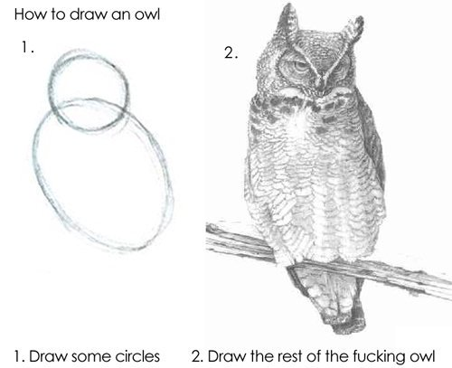

Asynchronous Programming at RustConf 2018
$ rustup update nightly
$ rustup override set nightly

- Michael Gattozzi
- 3+ Years of Rust
- wasm-wg member
- Maker of groan inducing puns
- Anime nerd
- Handle for everything: mgattozzi
- @ me so I can get free dopamine
- Taylor Cramer
- @cramertj on everything
- Oxidizing since early 2016
- Lang Design and Compiler Team Member
- WG Net Async Lead
and don't hate on my puns :D

often called M:N threads or "green threads."

- Caused "stack thrashing"
- FFI expects large stacks

- No more runtime system
- No more garbage collection


- Network IO
- Message from another thread or computer
- Chained operations
- Future is a concrete type
- Actively driven to completion by runtime
- Methods create callbacks spawned onto an executor
- Allocation heavy (one per callback/map/and_then)
- Future is a trait
- Does nothing unless passed to an executor and run
- Methods create wrapper types which run their children
- One allocation per top-level task
- Future spawned onto executor
- Executor polls a Future
- Future says "I'm not ready yet!"
- Executor goes to sleep until Future sends a wakeup


enum Poll<T> {
Ready(T),
Pending
}
trait Future {
type Output;
fn poll(&mut self, wake: fn()) → Poll<Self::Output>;
}

$ cargo new my_executor --bin
$ cd my_executor
$ vim Cargo.toml # emacs is fine, too, I guess
cargo-features=["edition"] #------ add this one
[package]
name = "my_executor"
version = "0.1.0"
authors = ["Michael Gattozzi <mgattozzi@gmail.com>"]
edition = "2018" # ------ and this one
# and these ones-- this will be our first binary target,
# but we'll add others later.
[[bin]]
path = "src/waker.rs"
name = "waker"
cargo run --bin waker#![feature(arbitrary_self_types, futures_api, pin)]use std::sync::mpsc::{sync_channel, SyncSender};
use std::future::{Future, FutureObj};
use std::mem::PinMut;
use std::sync::{Arc, Mutex};
use std::task::{
Context,
Executor,
local_waker_from_nonlocal,
Poll,
SpawnObjError,
Wake,
};struct Exec;
impl Executor for Exec {
fn spawn_obj(&mut self, _obj: FutureObj<'static, ()>)
-> Result<(), SpawnObjError>
{
Ok(())
}
}struct MyFuture(bool);impl Future for MyFuture {
type Output = ();
fn poll(mut self: PinMut<Self>, cx: &mut Context)
-> Poll<Self::Output>
{
if self.0 {
return Poll::Ready(());
}
self.0 = true;
cx.waker().wake();
Poll::Pending
}
}
struct Task {
sender: SyncSender<Arc<Task>>,
future: Mutex<MyFuture>
}
impl Wake for Task {
fn wake(arc_self: &Arc<Self>>) {
let cloned = arc_self.clone();
let _ = arc_self.sender.send(cloned);
}
}fn main() {
let mut exec = Exec;
let (tx, rx) = sync_channel(1000);
let task = Arc::new(Task {
future: Mutex::new(MyFuture(false)),
sender: tx.clone()
});
let waker = local_waker_from_nonlocal(task.clone());
let cx = &mut Context::new(&waker, &mut exec);
let _ = tx.send(task); while let Ok(task) = rx.recv() {
let mut future = task.future.lock().unwrap();
match PinMut::new(&mut *future).poll(cx) {
Poll::Pending => println!("Pending"),
Poll::Ready(()) => {
println!("Ready");
break;
},
}
}
}- Your goal is to create a Future that can wait n seconds and will print out when n seconds have passed.
- You will need std::time::{Instant, Duration};
- You will need a new type and implement Future for it
- If the time alloted hasn't passed wake the Future. We don't want to block
- Don't use thread::sleep to get a certain period of time to pass


[[bin]]
path = "src/tiny.rs"
name = "tiny"cargo run --bin waker#![feature(async_await, await_macro, futures_api, pin)]use std::future::{Future, FutureObj};
use std::mem::PinMut;
use std::sync::{Arc, Mutex};
use std::sync::mpsc::{
sync_channel,
SyncSender,
SendError,
Receiver
};use std::task::{
self,
Executor,
local_waker_from_nonlocal,
Poll,
SpawnErrorKind,
SpawnObjError,
Wake,
};struct Exec {
task_sender: SyncSender<Arc<Task>>,
task_receiver: Receiver<Arc<Task>>,
}struct Task {
future: Mutex<Option<FutureObj<'static, ()>>>;,
task_sender: SyncSender<Arc<Task>>,
}impl<'a> Executor for &'a Exec {
fn spawn_obj(&mut self, future: FutureObj<'static, ()>)
-> Result<(), SpawnObjError>
{
let task = Arc::new(Task {
future: Mutex::new(Some(future)),
task_sender: self.task_sender.clone(),
}); self.task_sender
.send(task)
.map_err(|SendError(task)| {
SpawnObjError {
kind: SpawnErrorKind::shutdown(),
future: task.future
.lock()
.unwrap()
.take()
.unwrap(),
}
})
}
}
- Implement Waker for Task
-
Make an impl Exec that contains the functions:
fn new() -> Self fn run(&self) - run should be a loop that takes a task off of task_reciever
- Once it has the task check that it has a future that can be executed
- If it does create a LocalWaker and Context object with a reference to the executor
- PinMut the future and poll it and if it's still Pending make sure that the Task has the Future back inside it
- Create a main function, create a new executor, spawn a new future into it and execute it
-
FutureObj::new(Box::new(async { println!("I'm a spawned future")})
fn cinderella() {
println!("I wish I could go to the event loop ball");
}async fn cinderella() {
println!("I can go to the event loop ball now!");
}async fn second() {
println!("Second");
}
async fn third() {
println!("Third");
}
async fn first() {
let third = third();
let second = second();
println!("First");
await!(second);
await!(third);
}await!() will become just await eventually
async fn second() {
println!("Second");
}
async fn third() {
println!("Third");
}
async fn first() {
let third = third();
let second = second();
println!("First");
await second;
await third;
}macro_rules! await {
($e:expr) => { {
let mut pinned = $e;
loop {
if let $crate::task::Poll::Ready(x) =
$crate::future::poll_in_task_cx(unsafe {
$crate::mem::PinMut::new_unchecked(&mut pinned)
})
{
break x;
}
yield
}
} }
}Nice iterator like adaptors for Futures
No need for you to make an event loop